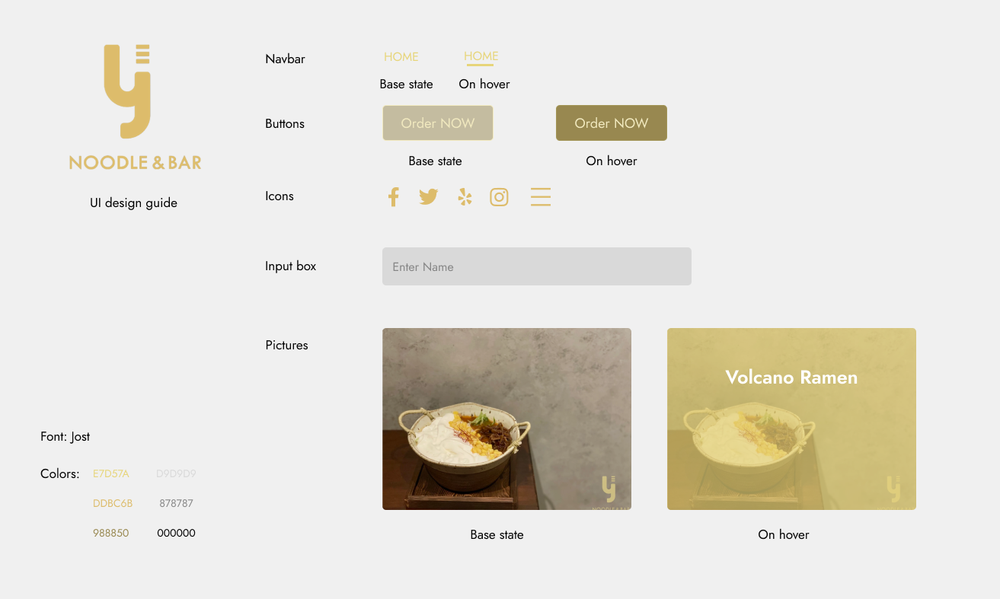
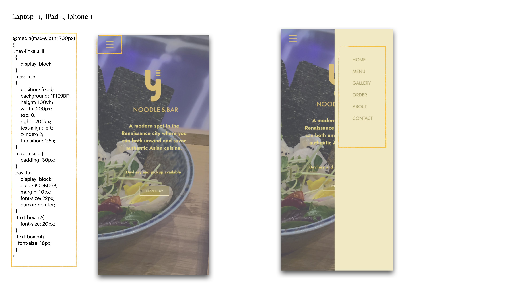
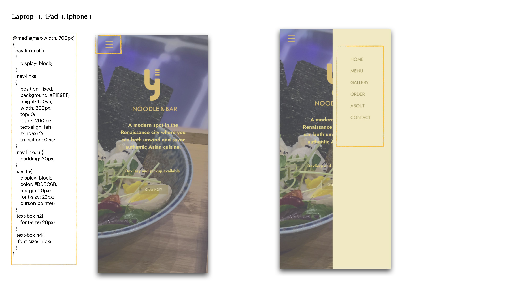
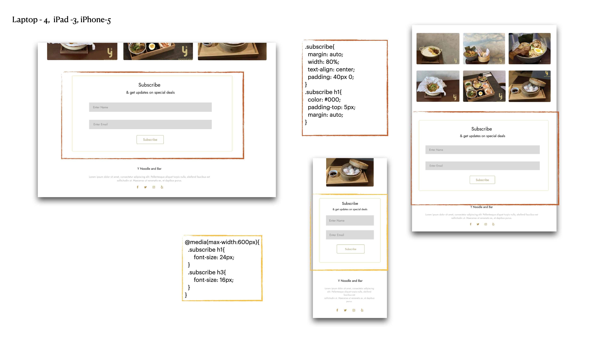
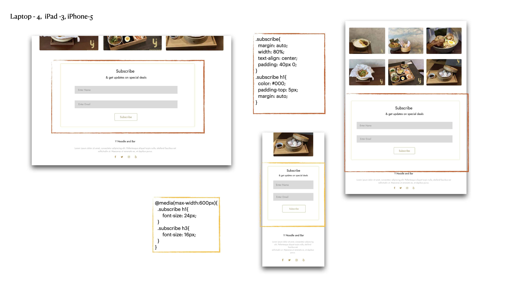
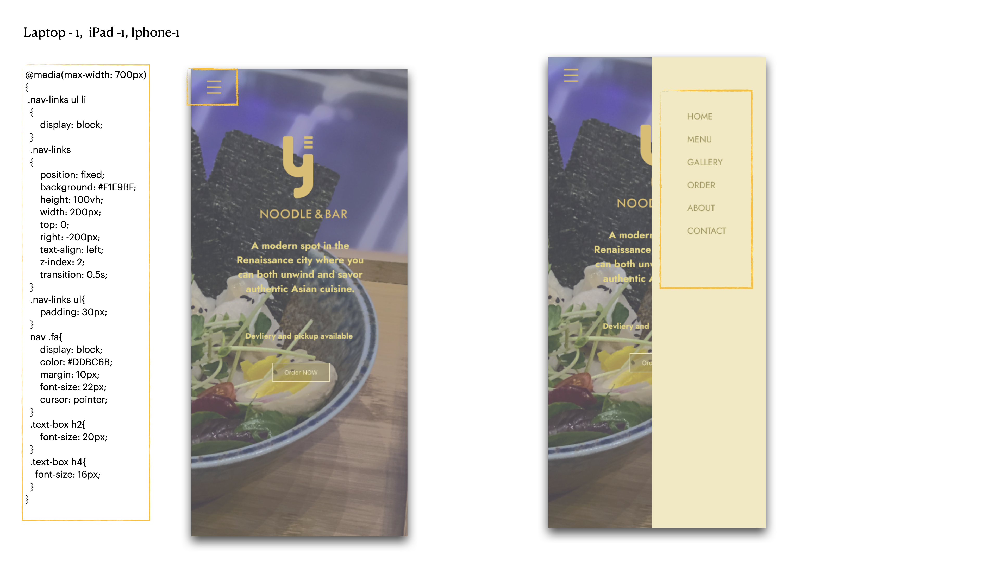
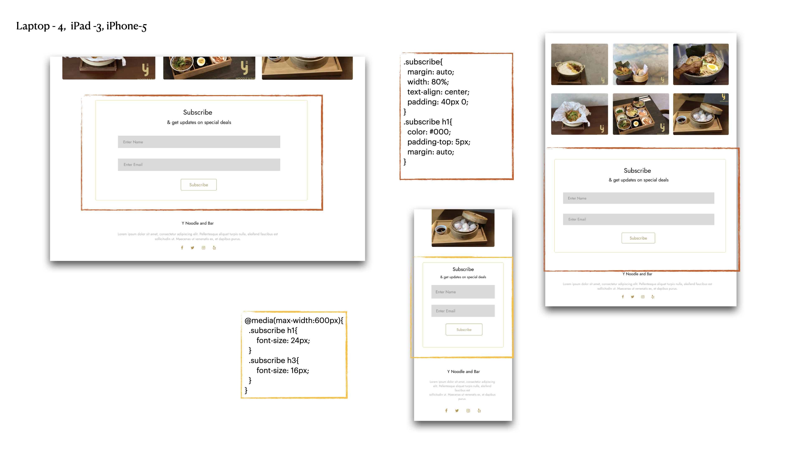

Hi-fidelity design
I have made the following hifi design for the y noodle and bar website.
You may note that the high-fidelity design is a little bit different from lofi on sizes -- yes, I changed my mind during the process of designing and thought that a full-screen hoom page could be pretty cool! In the annotations, I have specifically highlighted elements that require complex alignment or care on responsiveness across different devices.

 


 


